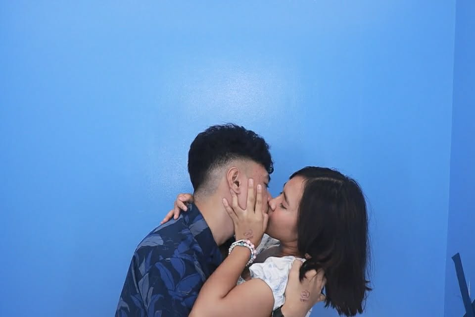
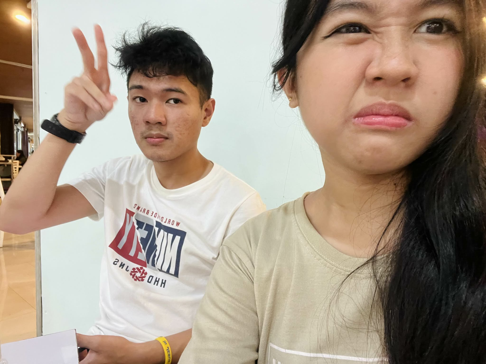
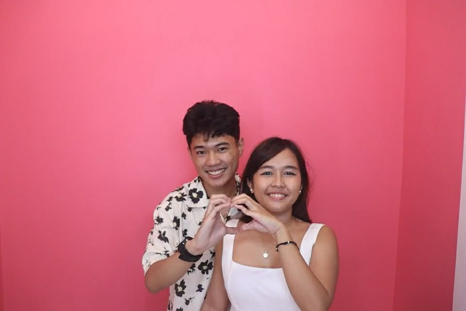
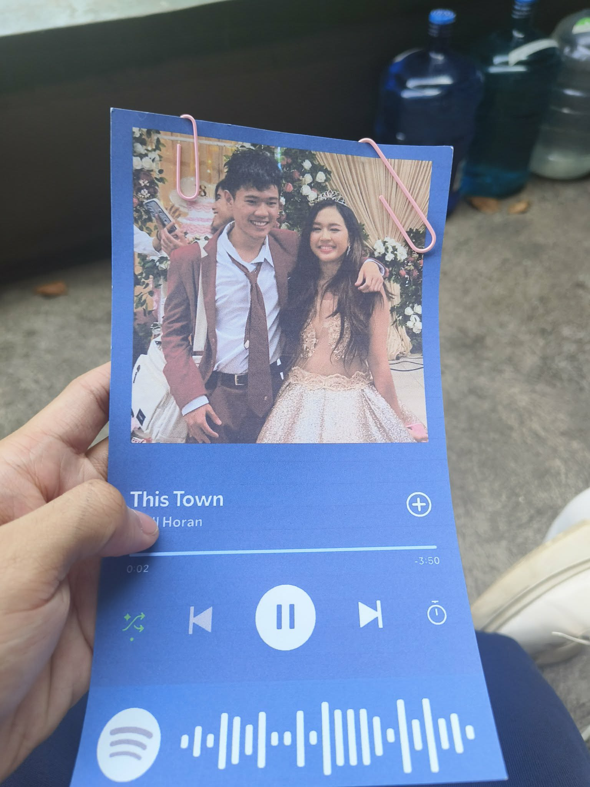
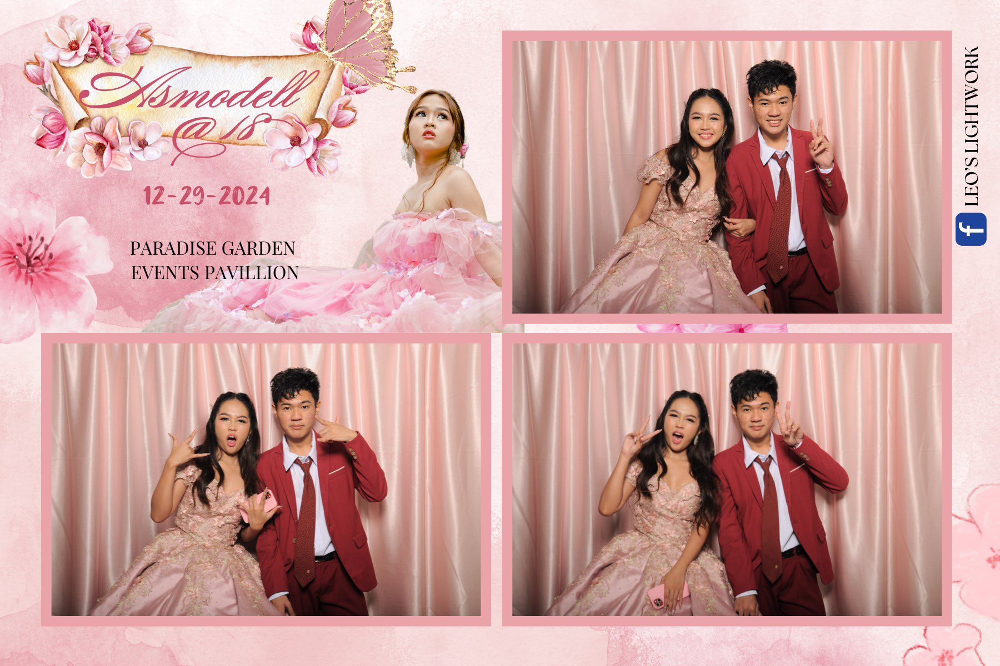
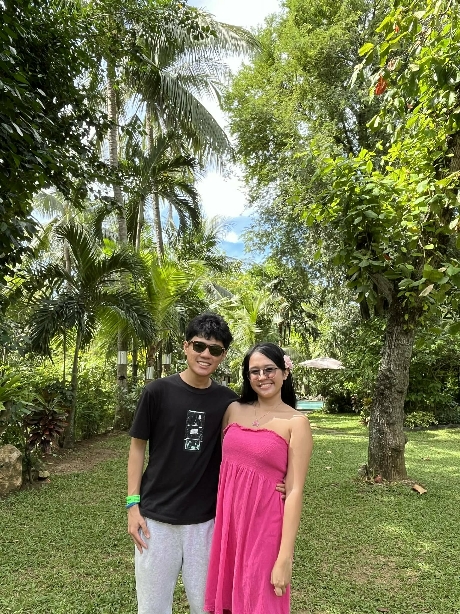
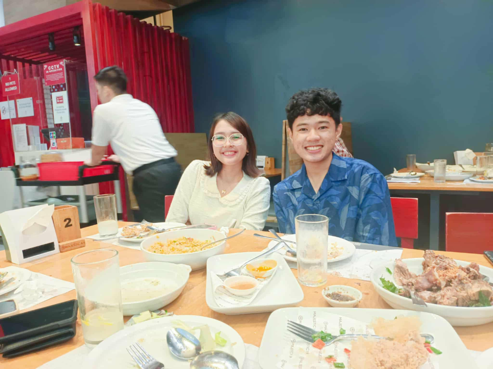
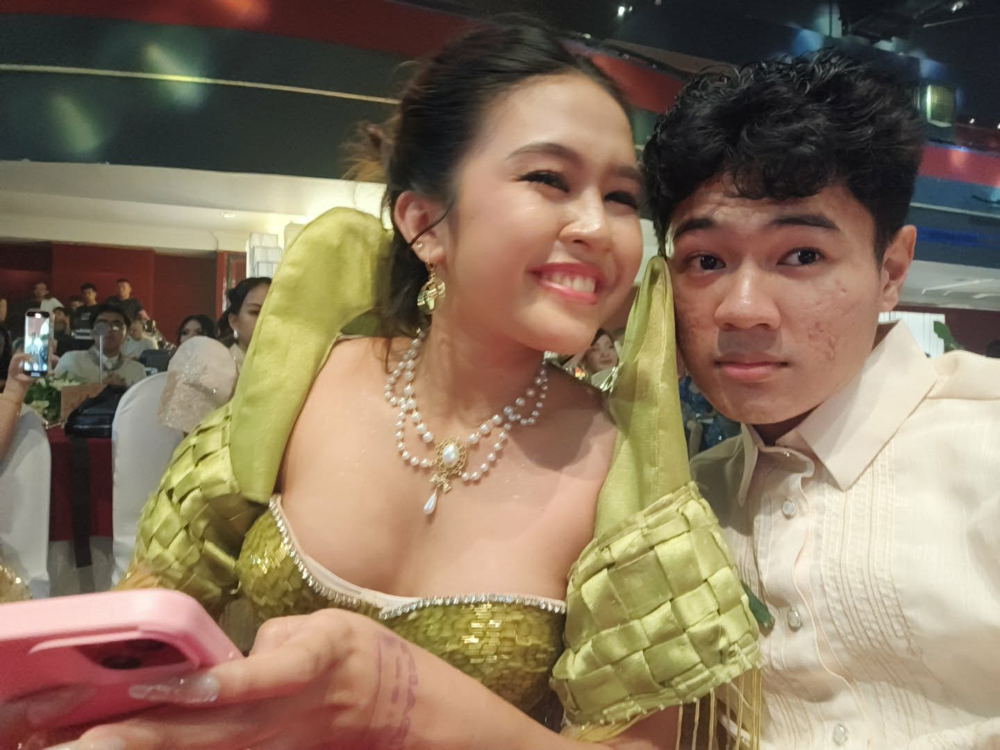

This is where our photo would go!
Happy Valentine's day and happy MOTMOT my baby I love you so much! This is our second valentine's day together and celebrating 9 months YAYYAYAYAY!!! Thank you for being so loving in times when I felt unloving, unfeeling, unemotional, and unresponsive. There is just something deep within your soul that always manages to help me get back on my feet. I've seen it, I've had it, I've felt it, and I've adored it. As the song says, "Until the day the ocean doesn't touch the sand. Now and forever, I will be your man."







